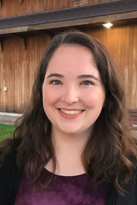

Team Queen's Canada
This year, the QGEM team is composed of undergraduate students from a wide range of backgrounds including Life Sciences, Biology, Biochemistry, Computing, and Engineering. Each year our team dedicates four months during the summer towards working on our project, after which we attend the iGEM Competition, where we present our project and learn about the projects of other universities around the world.
2017 QGEM Members
-
Yifei Wang (Director)
Yifei is in his fourth year of Life Sciences. Yifei is the new QGEM Dictator after overthrowing Dragos in a peaceful coup and enjoys bossing the QGEM team around from his SynBio throne. His favourite class at Queen’s was molecular biology, and he hopes to pursue a career that combines SynBio and medicine. Yifei has a burning passion for Metro prepared meals, but hopes to have enough money one day after becoming the CEO of his own biotech startup that he can hire Chef Dee #anotherone. His favourite sports team is the Toronto Raptors, and he hopes that his amateur career as a Roots model will one day allow him to replace Drake as their new courtside celebrity. -
Nolan Neville (Wet Lab Co-Lead)
Nolan is in his fourth year of Biochemistry. He is particularly interested in bacteria and the rise of antibiotic resistance, so this year’s biofilm project was right up his alley. When he isn’t running around in the lab or admiring crystal structures, he can be found listening to old Dire Straits records and learning classic rock riffs on his Les Paul. In the future, Nolan hopes to pursue a career in research working to create novel antibiotics. -
Mady Thompson (Wet Lab Co-Lead)
Mady is in her fourth year of Biochemistry. She is particularly interested in biomaterials, and hopes to pursue a Master’s degree in engineering in this field. She hails from Sunnyvale Trailer Park; ask her how the mosquitos are tonight for a guaranteed laugh. When she isn’t in the lab characterizing kinesin proteins, she can be found scouting the halls of Botterell for cute firefighters. Mady also moonlights as a professional basketball player in the lab, so be sure to wear your goggles to protect your eyes from her stray 3-pointers. Mady hopes to one day use her biomaterials engineering skills to make toothpaste less spicy. -
Sarah Babbit (Dry Lab Lead)
Sarah is in her third year of Apple Math. She enjoys long walks on the beach, and harassing Dragos for dry-lab trouble shooting. Sarah loves to drive stick, schedule meetings at 8am on Monday mornings, and make ordinary differential equations for QGEM. Sarah's Mom still makes her lunch, but she hopes to one day write a code to do it for her. -
Declan Rowett (Wiki Volunteer)
Declan is in his 2nd year of Apple Math. A late recruit to the team, he willingly chose to spend the last month of his summer writing html for this wiki. When not changing a page one line at a time, Declan can be found binge watching The Office or browsing the interwebs. -
Eshan Cheema (Outreach Volunteer)
Eshan is in his second year of Biochemistry. Aspiring to go into medicine and get more involved in research, he found that QGEM offers a great way to combine these interests, learning about the applications of synthetic biology! When not busy with school work, Eshan can be found playing water polo or reading books. Eshan is also an executive for Queen’s Indian Students Association (QISA). -
Ruban Warkentin (Outreach Volunteer)
Ruben is in his second year of Biochemistry. He was drawn to QGEM by the thought of manipulating E. coli into doing his bidding and the idea of tackling real world issues. Using his flamingo shirt, he hopes to bring fresh style and ideas to the QGEM outreach team. When not writing interview questions Ruben can be found honing his fine motor skills dissecting fruit flies. -
Micheal Doerksen (Wet Lab Volunteer)
Michael is in his third year of Life Sciences. He saw QGEM as an exciting opportunity to see the process of a research project, and learn more about synthetic biology. He also hopes to learn valuable lab skills while working in a collaborative environment. Michael wishes to continue his studies, and pursue research once his undergraduate degree is complete. -
Andrew Grebenisan (Dry Lab Volunteer)
 Andrew is in his third year of Biochemistry. A few months ago, he had the chance to witness a QGEM presentation in his introduction molecular biology course, and since then, he felt as if his life was changed. He began researching synthetic biology, and realized that THAT was what he wanted to be doing in his life. Because of QGEM, he decided on pursuing a computing minor, thus giving him either bioinformatics or synthetic biology as career options after he graduates.
Andrew is in his third year of Biochemistry. A few months ago, he had the chance to witness a QGEM presentation in his introduction molecular biology course, and since then, he felt as if his life was changed. He began researching synthetic biology, and realized that THAT was what he wanted to be doing in his life. Because of QGEM, he decided on pursuing a computing minor, thus giving him either bioinformatics or synthetic biology as career options after he graduates.
-
Julia Grein (Volunteer Liaison)
 Julia is in Biochemistry with a Certificate in Business, away on a co-op placement in Business Development. Although away from the lab, Julia identifies herself with bacterial contamination, not just because she’s small but mighty, but also because she just won’t get away from iGEM! This being her third year with QGEM, she’s taken on a new role to help manage the team. When she’s not doing research, having too much fun with Microsoft Excel, or writing QGEM newsletters, she’s at the gym or lost in Toronto without data.
Julia is in Biochemistry with a Certificate in Business, away on a co-op placement in Business Development. Although away from the lab, Julia identifies herself with bacterial contamination, not just because she’s small but mighty, but also because she just won’t get away from iGEM! This being her third year with QGEM, she’s taken on a new role to help manage the team. When she’s not doing research, having too much fun with Microsoft Excel, or writing QGEM newsletters, she’s at the gym or lost in Toronto without data.
-
Christina Li (Dry Lab Volunteer)
Christina is in her second year studying computer engineering. She was introduced to QGEM through one of her engineering projects to create a blue-light transilluminator, and seized this opportunity to integrate the two things she loved: programming and synthetic biology. With high school-level biology, she found some concepts intriguing but difficult to grasp, nevertheless Christina is more than willing to sit down and crack some code or model some data. She appreciates QGEM in providing a team where she can collaborate with others and continue learning about genetics. -
Deyang Li (Dry Lab Volunteer)
Deyang is in his second year of Life Sciences. He was drawn to QGEM because of its uniqueness as a student led undergraduate research team, as well as the potential applications of synthetic biology, from pharmaceutical applications to oil remediation. He currently helps with the dry-lab, and outside of QGEM, Deyang enjoys badminton, long runs, and the occasional all you can eat sushi buffet. -
Sara Stickley (Wet Lab Volunteer)
 Simran is a fourth year Biochemistry student who is terrible at writing biographies about herself. After realizing she loves research and lab work, she found QGEM to be the perfect environment to collaborate with colleagues on a project that spans every step of the research process. She has found that she thoroughly enjoys all the different components of QGEM and hopes to make an impact with all the work each member has put in. She has also found that, unlike many other team members, she doesn’t care much for Drake and sincerely hopes that this isn’t reason enough to get kicked off the team. -
Rajiv Tanwani (Wet Lab Volunteer)
 Rajiv is in his third year of Life Sciences. He was originally drawn to QGEM last summer because he wanted to explore the avenues of research in a student-led environment. Rajiv contributed to both the Dry-Lab as well as the Policy and Practices component last summer but is working as a Wet-Lab volunteer this summer. In his spare time, Rajiv enjoys hiking, tagging his friends and family in Facebook memes, and enjoys the occasional Netflix episode. In the future, Rajiv plans to continue pursuing research that combines his interests in both healthcare and synthetic biology.
Rajiv is in his third year of Life Sciences. He was originally drawn to QGEM last summer because he wanted to explore the avenues of research in a student-led environment. Rajiv contributed to both the Dry-Lab as well as the Policy and Practices component last summer but is working as a Wet-Lab volunteer this summer. In his spare time, Rajiv enjoys hiking, tagging his friends and family in Facebook memes, and enjoys the occasional Netflix episode. In the future, Rajiv plans to continue pursuing research that combines his interests in both healthcare and synthetic biology.